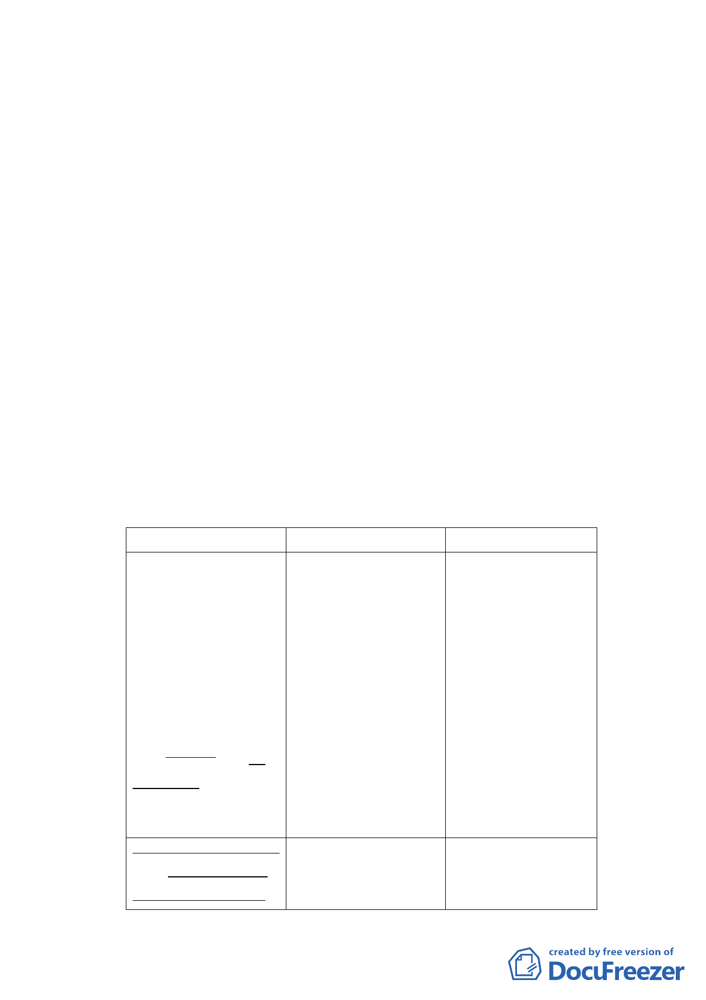

求，且應無開發後土地畸零破碎之疑慮，又為改善居住環境、
促進地區發展、提升整體都市環境品質，爰辦理本案都市計
畫變更。
三、 土地使用現況
（一） 使用現況
本計畫範圍中「商業區（第三種商業區）」包含京華
城購物中心（90年營運迄今），及西北側24筆土地（約1977
平方公尺），該西北側土地多係領有55～59年間建照，屋
齡約40年，多為4層樓建築，現況一樓部分為店鋪使用，
其餘樓層為住宅使用。
另計畫範圍西南側係依80年2月13日公告都市計畫書
規定捐地，已開闢為公園廣場用地，其上為2層樓之台北
偶戲館。
（二） 土地權屬
本計畫範圍包括松山區西松段三小段156地號等35筆
土地，除西松段三小段162-4地號等10筆土地為市有土地
（即公園廣場用地範圍）、西松段三小段192地號土地為國
有土地外，其餘均為私有土地。
四、 修訂細部計畫內容：
新計畫
原計畫
說明
叁、計畫內容
叁、計畫內容
考量該區已無全街
為採用「大街廓
為採用「大街廓 廓整體開發需求，
整體開發」理念，並 整體開發」理念，並 且應無開發後土地
符合台北市土地因畸 符合台北市土地因畸 畸零破碎之疑慮，
零不整且坵塊過於瑣 零不整且坵塊過於瑣 又為改善居住環
碎而必須採取「整合 碎而必須採取「整合 境、促進地區發
與集約使用」之特 與集約使用」之特 展、提升整體都市
性，本基地開發方式 性，本基地開發方式 環境品質，爰刪除
應採大街廓整體規 應採大街廓整體開發 原計畫大街廓整體
劃，分期開發為原 為原則。
開發規定，修正為
則。
整體規劃，分期開
發為原則。
七、事業及財務計畫 七、事業及財務計畫 考量該區已無全街
本案開發計畫
本案開發計畫 廓整體開發需求，
應由威京公司整體 應由威京公司整體 且應無開發後土地
- 48 -